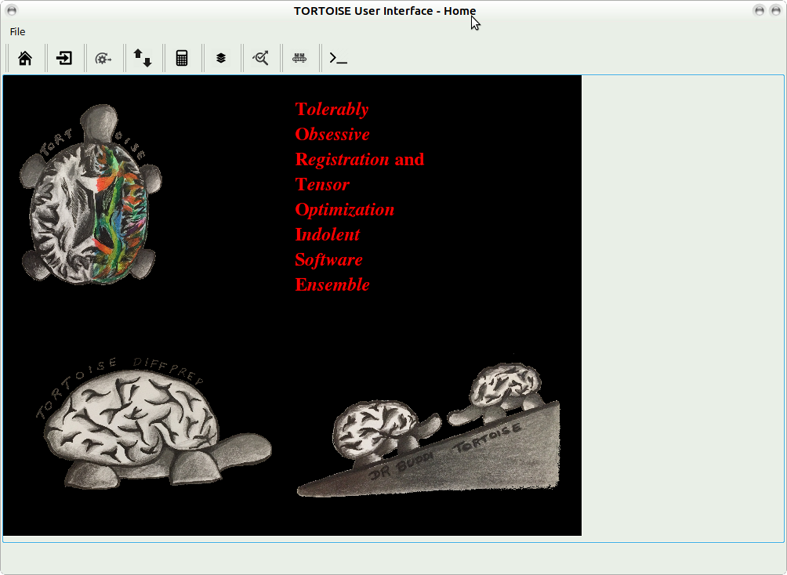
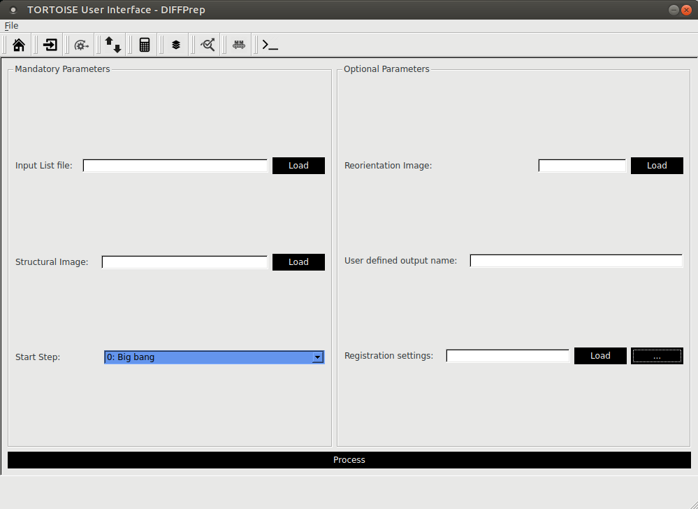
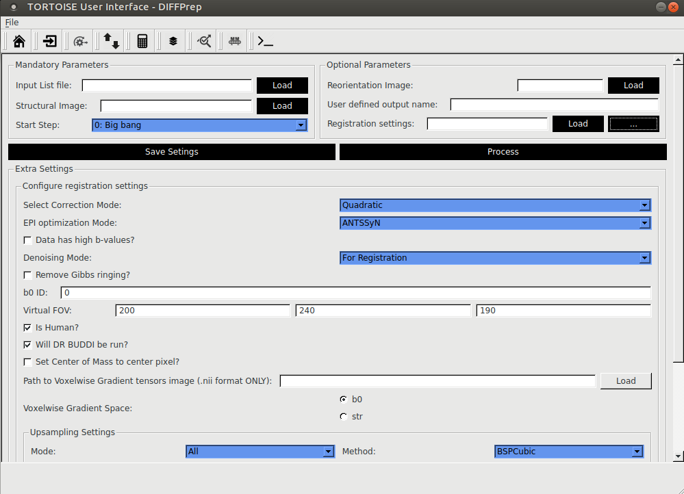
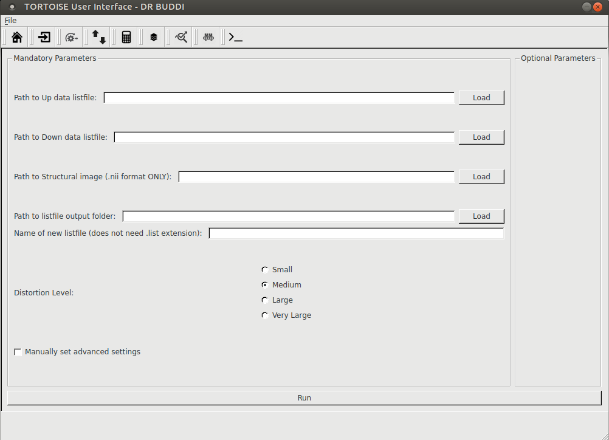
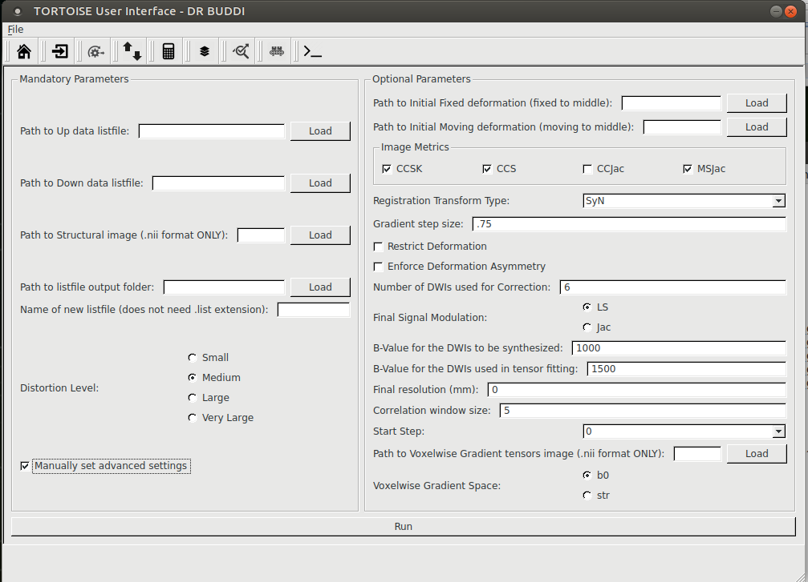
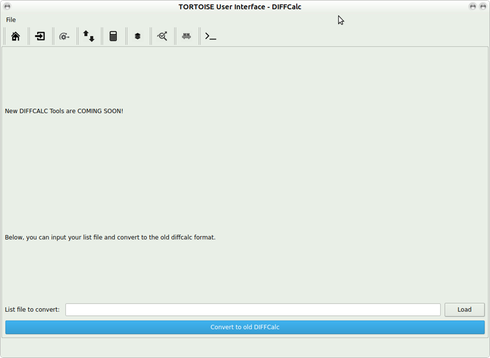

13. TORTOISE GUI 3.1¶
13.1. Launching GUI:¶
Note
Please make sure you have python set up correctly on your computer. Please refer Installation section for more details.
From TORTOISE_V3.1.0/TORTOISE_GUI - please type python TORTOISEGui.py
The main screen will appear:
- Please pick import icon to go to the import screeen
- From the drop down menu please select the data type that you want to import.
- Click import.
Note
- Please refer section on Import in this documentation for more details. The same commands have been incorporated into the GUI and can the tags displayed there can give you more information on usage.
13.2. DIFFPREP GUI¶
Registration settings: if you click load you can pick the saved registration settings file in your DIFF_PREP_WORK folder.
If you click on ? it will open additional options that you can pick and it will overwrite some of the options in the registration file selected.
Click on SAVE SETTINGS if you would like to save these new options with a new registration settings file name.
Note
if you pick additional options from the drop down menu, additional tabs will appear where you can set various parameters to suit your data. Please refer to the
Click process to process the data and the outputs will be written in the ?proc? folder.
Note
Please refer to section 7, step 3 to understand the various paramters that need to be set for DIFFPREP processing.
13.3. DR-BUDDI GUI¶
Click ?run? at the bottom of the screen to process data with DR-BUDDI. The final output will be written in a ??_DRBUDDI? folder.
 Note
Please refer to section 9,step 3.1 of the manual for details about DRBUDDI processing.
13.4. DIFFCALC GUI¶
Please enter the full path to the new list file and click on ?convert to old DIFFCALC?. The outputs will be written in the ?proc? folder with the tag ??..OF.?
Note
Please refere section on DIFFCALC31, included in this documentation to perfrom diffcalc tensor fitting.
Note
In addition, you can refer to https://science.nichd.nih.gov/confluence/display/nihpd/1.3.3+Running+DIFF_CALC for more details on running DIFFCALC. Following are the instructions for using DIFFCALC https://science.nichd.nih.gov/confluence/display/nihpd/DIFF_CALC+Main and details regarding all the outputs generated in the diffcalc SAVE folder.